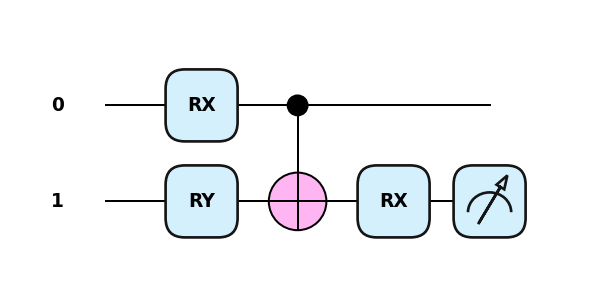

from qiskit import QuantumCircuit
from qiskit.circuit import Parameter
a = Parameter('a')
qc = QuantumCircuit(1)
qc.ry(a, 0)
qc.draw()┌───────┐ q: ┤ Ry(a) ├ └───────┘
It might have caught your attention that in our previous example there were some parameters set based on the scheduling function and the evolution of the Suzuki-Trotter approximation. But what if wou could harness the potential of classical optimization methods to find a better parametrization?
In fact, we could potentially remove some of those blocks that may not add too much, producing the approximation for the functional they encode in a more compact way. This also benefits when going to the hardware. The shallower the circuit, the less noise it gets accumulated.
The variational principle states a problem can be solved by using calculus of variations, which requires finding functions that optimize the values (parameters) that depend on those very same functions. This formal structure is extensively used when training machine learning models as those can be thought as parameterized functions whose target can be minimized by varying the weights (parameters) it is defined by.
Variational Algorithm make use of these three basic principles:
These procedures therefore require the circuit to be evaluated (measured in some manner) and parameters changed ideally approximating a target value. This process is quite known for those coming from classical machine learning and therefore you can benefit from that ecosystem. Specifically, optimization techniques.
The easiest ones are gradient-free optimization techniques. Those explore the solution space on a way such that no derivatives of the actual function (our circuit in our case) is required.
A different approach is to extend those gradient based optimizers given that quantum circuits do provide a way in which their derivative can be approximated.
In order to fit the ideal set of parameters minimizing a cost function, gradient based approaches are quite popular as being aware of the direction in which this cost function is minimized it may shorten the time required for the method to find it target Quantum circuits have a similar capacity, we can free up the parameters of a given circuit and optimize based on a cost function which in most cases can be represented by the expectation value over some observable. For this, we would need to understand how these derivatives can be computed… at scale.
from qiskit import QuantumCircuit
from qiskit.circuit import Parameter
a = Parameter('a')
qc = QuantumCircuit(1)
qc.ry(a, 0)
qc.draw()┌───────┐ q: ┤ Ry(a) ├ └───────┘
This is a simple rotation over the Y axis of the bloch sphere. So we know that if we measure the observable X of a given state produced by this rotation we get:
\[ \langle Y(a) | X | Y(a) \rangle = \sin(\pi a) \]
import numpy as np
from qiskit.quantum_info import Statevector
init = QuantumCircuit(1)
state = Statevector(init)
val = 0.3
circ = qc.assign_parameters({a : np.pi*0.3})
eval = state.evolve(circ)
print(eval)Statevector([0.89100652+0.j, 0.4539905 +0.j],
dims=(2,))from qiskit.quantum_info import Pauli
# Target hamiltonian
op = Pauli('X')
print(f"<Ry|X|Ry> : {eval.expectation_value(oper=op)}")
print(f"Sin function: {np.sin(np.pi * val)}")<Ry|X|Ry> : 0.8090169943749473
Sin function: 0.8090169943749475Then we know we could calculate its derivative as \(\pi\cos(\pi a)\). This may not be an option for when we go to hardware and we make the circuit much more complicated in terms of gates (in particular multiqubit gates). Enter numerical resolution of derivatives!
We can produce an approximation to our target by leveraging finite differences for numerical approximation, taking into consideration the limit:
\[ f^{'}(a) = \lim_{h \rightarrow 0} \frac{f(a + h) - f(a)}{h} \]
which essentially only requires two evaluations of our function.
state = Statevector(init)
val = 0.3
h = 0.001
# Get the expectation value for f(x)
circ = qc.assign_parameters({a : np.pi*0.3})
eval = state.evolve(circ)
exp_val = eval.expectation_value(oper=op)
# Get the expectation value for f(x+h)
circ = qc.assign_parameters({a : np.pi*(0.3+h)})
eval = state.evolve(circ)
exp_val_eps = eval.expectation_value(oper=op)
print('Finite difference:', (exp_val_eps - exp_val) / h)
print('Cosine formula: ', np.pi * np.cos(np.pi * val))Finite difference: 1.8425864574260764
Cosine formula: 1.8465818304904567With a varying number of observables and compositions, this is what automatic differentiation frameworks can provide by tracking values and benefitting from the composable nature of the numerical approximations. Sometimes we know the exact mathematical formula, but in the case of QC that’s usually not the case. One of the most basic methods to approximate it is called “finite differences”. Given a one variable function \(f(x)\) we can check what’s the value of the gradient by calculating its values upon small perturbations: \(f(x+\epsilon)\) and \(f(x−\epsilon)\) where \(\epsilon\) is just a very small number.
\[ \Delta_{\theta}f(x;\theta) = \frac{1}{2}\left[ f\left(x;\theta+\frac{\pi}{2}\right) - f\left(x;\theta+\frac{\pi}{2}\right)\right] \]
Frameworks like Pennylane specialize in this field, providing direct access to gradients when our circuit is defined.
import pennylane as qml
dev = qml.device("default.qubit", wires=2)
@qml.qnode(dev)
def circuit(weights):
qml.RX(weights[0], wires=0)
qml.RY(weights[1], wires=1)
qml.CNOT(wires=[0, 1])
qml.RX(weights[2], wires=1)
return qml.expval(qml.PauliZ(1))import pennylane.numpy as np
weights = np.array([0.1, 0.2, 0.3], requires_grad=True)
qml.drawer.use_style("pennylane")
qml.draw_mpl(circuit)(weights);
circuit(weights)tensor(0.9316158, requires_grad=True)qml.gradients.param_shift(circuit)(weights)tensor([-0.09347337, -0.18884787, -0.28818254], requires_grad=True)One of the problems with calculating gradients this way is that now we have to evaluate our cost function in the range of 3 times more for each iteration and number of variables (as we will need to fix all of them except one to compute the gradient at each variable value). More in detail explanation and relevant references can be found here.
In many cases we will see how non-gradient based methods are made available to avoid the extensive usage of quantum hardware.
The guiding light when training circuit using the variational principle is to accurately define the objective and cost functions. What are we looking for? How can we measure the progress? In general, it is understood that the minimization of energy, looking for the quantum state that renders a minimal expectation value, can be tractable and a good measure of improvement. this, the expectation value described as
\[ \langle \psi |H|\psi\rangle \]
being \(H\) the target hamiltonian or a hamiltonian characterizing the problem we would like to solve and \(|\psi\rangle\) the quantum state we would obtain out of the circuit, we would have a way to evaluate our progress. We could also formulate it as
\[ \langle H \rangle_{\psi} = \sum_j \lambda_j |\langle \psi|\lambda_j\rangle|^2. \]
It represents the summation of all eigenvalues conditioned by their probability of outcome given state \(|\psi\rangle\). That characterizes the mathematical nature of this value and it is evident the minimum value is reached when the there is a perfect overlap between \(|\psi\rangle\) and the minimum value eigenstate (\(H|\lambda_0\rangle = \lambda_0|\lambda_0\rangle\)).
In principle, if you can get an infinite number of steps and choose angles which exactly mimic the adiabatic path, you will get the right results. Therefore, the main limitation is defining a circuit and find the set of parameters that actually do the job. But, already mentioned in the literature:
“No one knows if a quantum computer running a quantum algorithm will be able to outperform a classical computer on a combinatorial search problem.”
Variational Quantum Eigensolver (VQE) and Quantum Approximate Optimization Algorithm (QAOA) are probably the two most known techniques in this regime so we will explore them to better understand what are their pros and cons. You will see how most of the foundation already established by the digitization of the annealing procedure will pay off while trying to understand those state-of-the-art techniques.